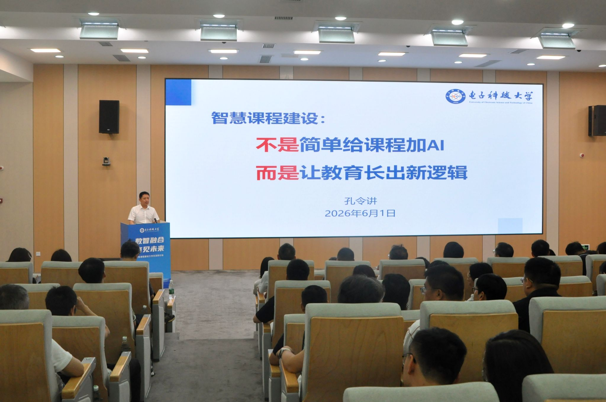
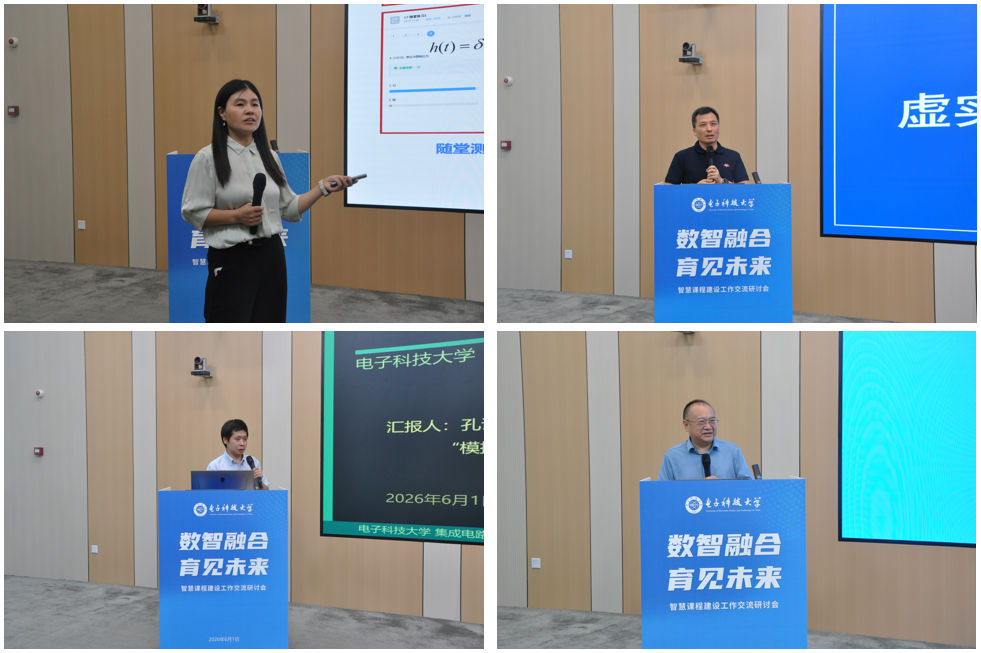
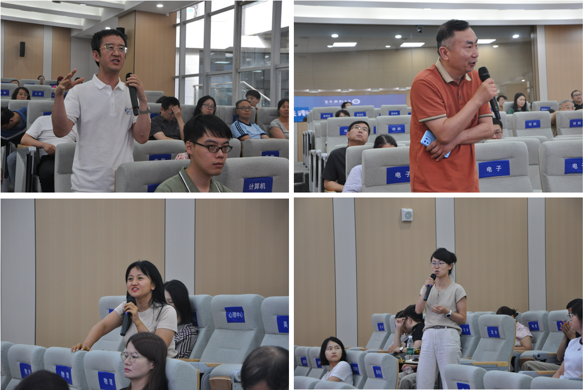

6月1日，学校举行智慧课程建设工作交流研讨会，副校长孔令讲出席会议并讲话。信息与通信工程学院吴慧娟副教授、光电科学与工程学院张尚剑教授、集成电路科学与工程学院孔谋夫教授、经济与管理学院赵卫东副教授作交流报告。学校本科教学教指委、通识教育委员会、督导组专家，各教学单位负责人及教师代表等200余人参会。会议由教务处处长刘宇主持。

孔令讲在讲话中指出，人工智能正推动教育进入前所未有的变革期，智慧课程不是给现有课程简单装上AI工具，而是在审视“学习是什么”“大学该培养什么人”的基础上，面向未来重新设计课程目标、内容、教学和评价方式。他强调要利用AI作为强大的辅助工具，压缩重复性、可被AI替代的低阶训练，腾出空间，强化高阶能力，要将课堂时间更多用于深度讨论、项目协作和创造性实践。他提出教师要转变角色为课程价值的设计者、深度学习的引导者、人机协同学习的组织者，要理解AI对学科知识体系、教学逻辑的深层影响，重构课堂教学设计和考核评价方式；教学单位要将智慧课程建设纳入专业培养体系整体考虑，推进“课程—教材—实践”的一体化智慧升级；各单位和师生要加强协同共创，让AI成为教学中的“苏格拉底式导师”和“创新协作者”，为学生提供真正有价值的教育。
在报告分享环节，四位教师分别展示了工科、理科和人文社科课程的智慧化建设实践

吴慧娟以“信号与系统”课程为例，展示了“教师—AI—学生”三元教学新生态的构建经验，通过知识图谱重构、智慧题库、AI助教全过程浸润等举措，实现了从AI外挂式到嵌入式全流程设计的升级。张尚剑介绍了“物理光学”课程“虚实融生”的教学创新，依托虚拟仿真实验平台，构建了“实体演示—虚拟仿真—研究性项目”三级递进探究式学习体系。孔谋夫分享了“模拟集成电路”系列课程基于通用AI Agent平台、由学生自主创建skill实现复杂电路重构与实时交互仿真的探索。赵卫东以“伴你学管理智能体”为蓝本，提出知识建构、情景模拟、学习评价三位一体智能体驱动教学模式的构想，推动学生从“旁观者”转变为“操盘手”。
在互动交流环节，与会教师围绕AI工具与底层能力培养、隐私伦理、课堂参与度、评价改革等展开热闹讨论。
刘宇在总结中提出，智慧课程建设是教育数字化转型的核心战场，希望各教学单位在重构教学逻辑、创新评价机制、深化师生共创等方面持续发力，探索未来教学的新形态。

版权归曾俊学所有